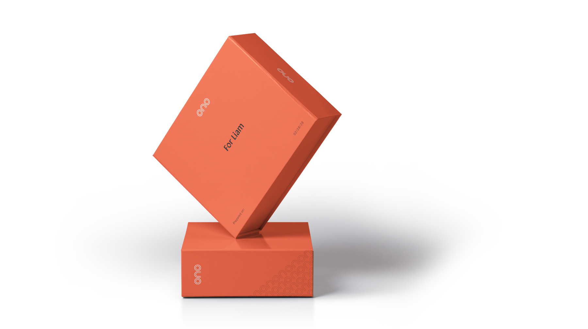
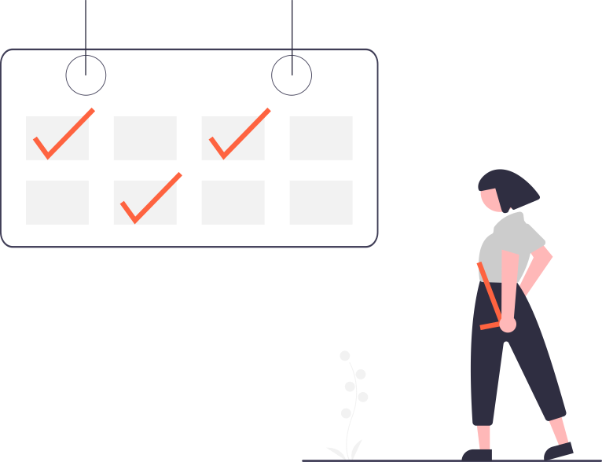
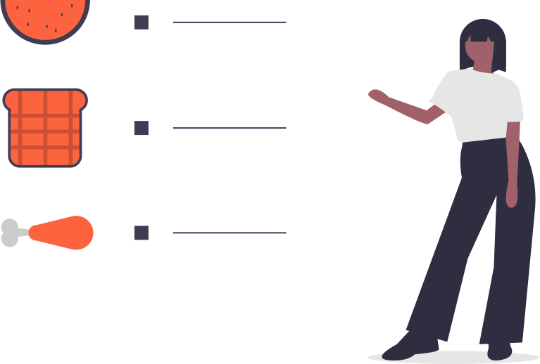
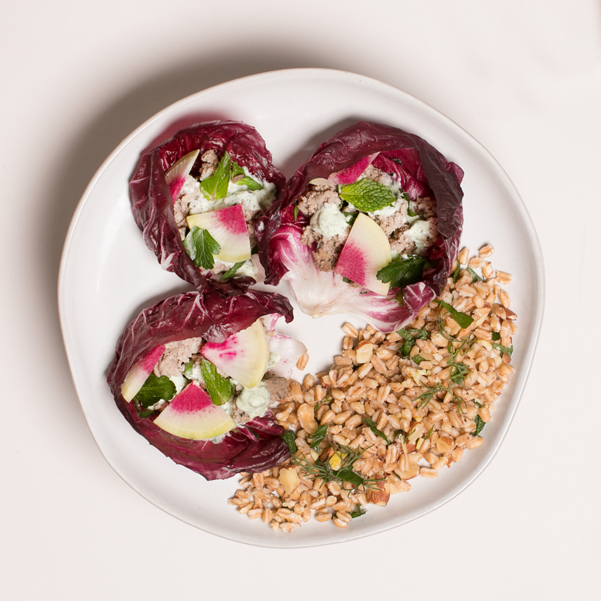
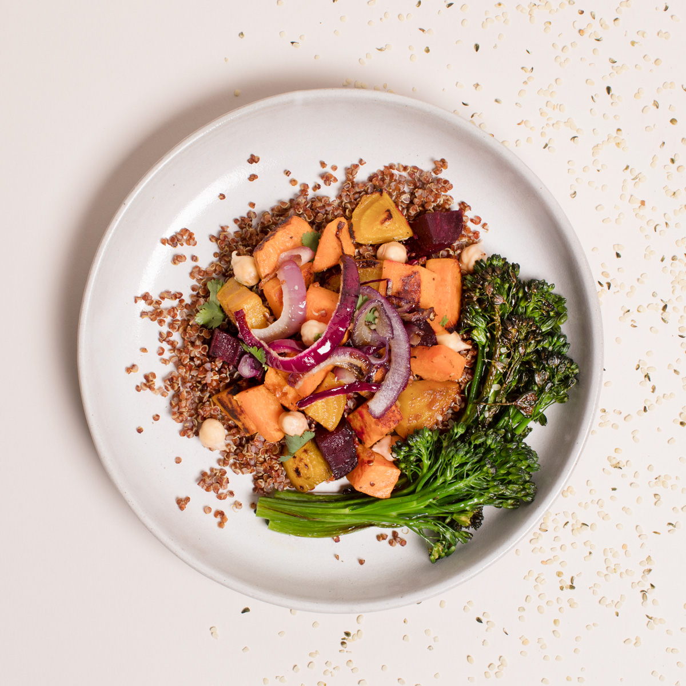
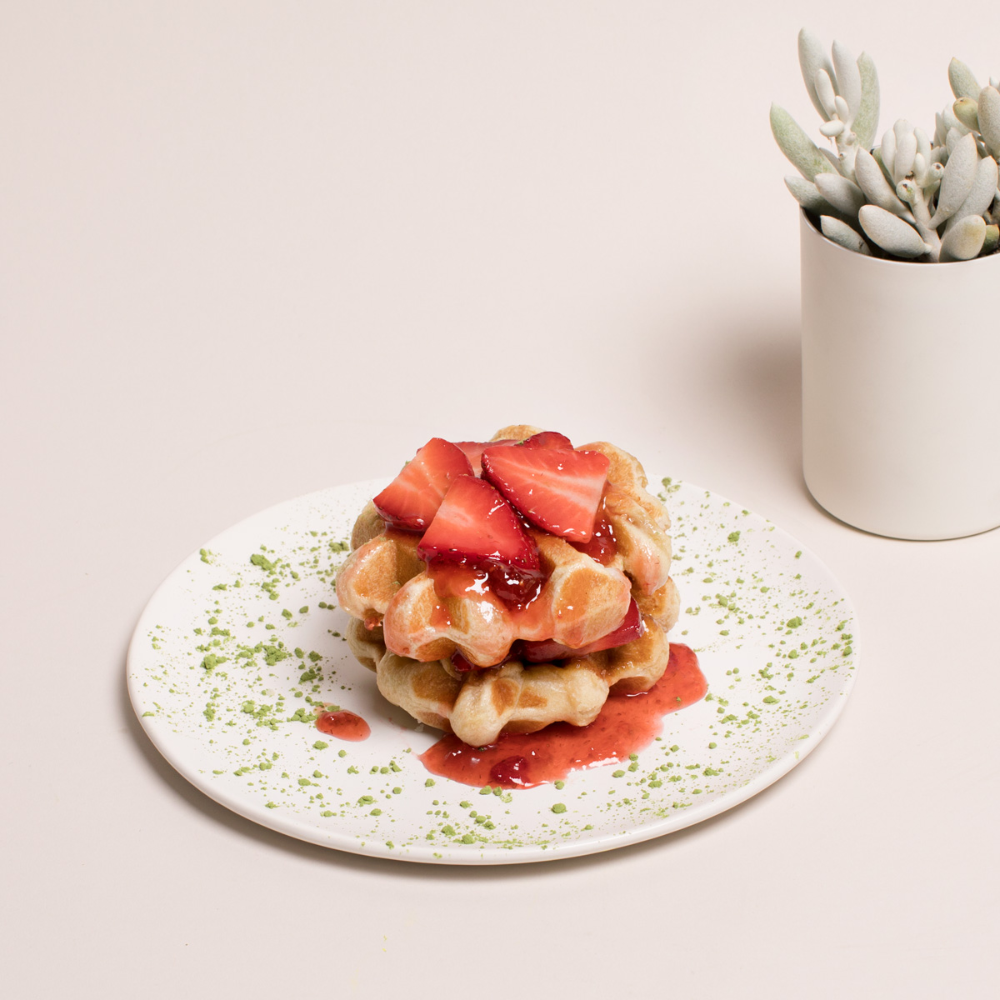
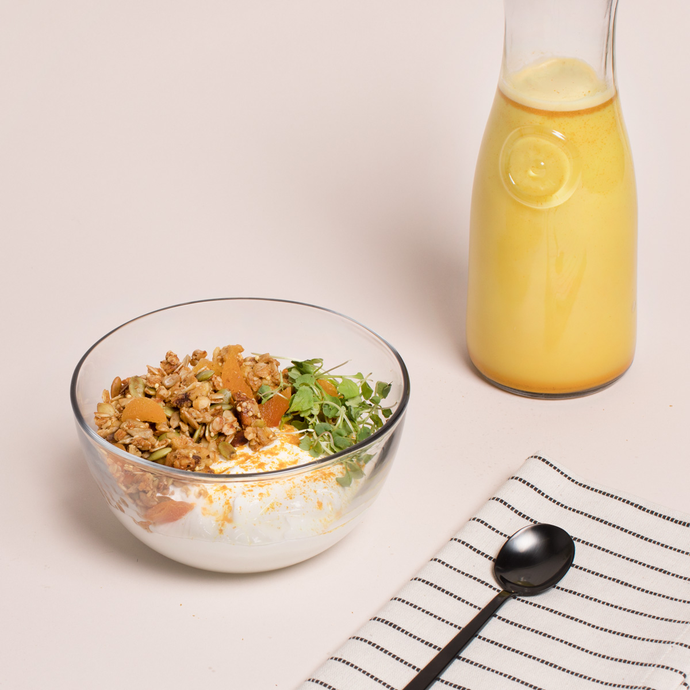
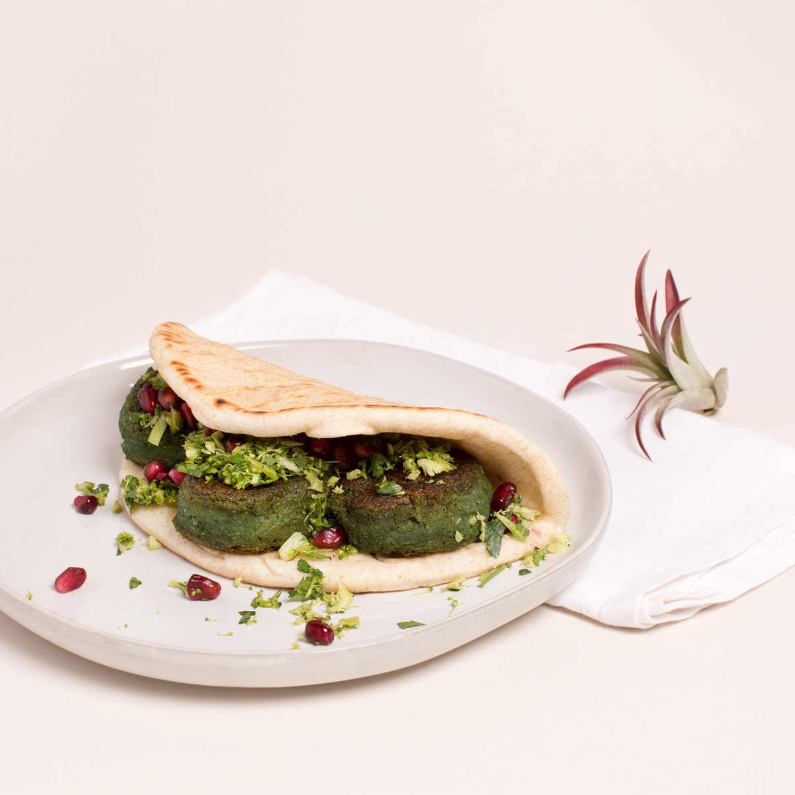

Ono es
Un chef, un genetista y un granjero entran a un bar
- 
Confiá en tu instinto
La comida es la forma más económica, rapida y deliciosa de modificar positivamente tu salud. Usamos tu ADN e información sobre tu estilo de vida para personalizar los alimentos para vos. Queremos ayudarte a lograr el mayor nivel de salud que hayas soñado.
Toc, toc.
¿Quién es?
Una comida deliciosa, conveniente, saludable y socialmente responsable.
Invita a Ono a pasar
Ono llega a tu puerta en un packaging 100% reutilizable. Si queres, incluimos cubiertos compostables. Cuando termines tu comida, mete todo en la caja (incluyendo las sobras) y nosotros lo pasamos a recoger. Compostamos las sobras, sanitizamos los conteiners y los llenamos de más comida deliciosa.
Zero Waste, Zero Bullsh*t
Cuando decimos que somos zero waste, lo decimos en serio. Desde la semilla hasta el compost y cada paso en medio, nos aseguramos de que todo lo que usamos sea renovable y este en armonía con la naturaleza y lo que no se llega a usar sea devuelto a la tierra.
Comé como más te guste.
Ono te permite personalizar tu propio plan de comidas.
A la carta. Proba todas las que quieras. Somos así de flexibles.

Se un campeón del planeamiento. Ahorrá con un paquete semanal.

Cená solx o con toda la familia.
¿Procrastinador? Recibí tu menú seleccionado por el chef en el mismo día.

Sin juzgar. Tenemos todo para cubrir tus necesidades o preferencias de dieta.
Menú de hoy

Cordero de laboratorio y wraps de rabano y sandía con crema de ajo y finas hierbas. Servido con farro de almendras tostado.

Vegetales asados con quinoa y cilantro.

Waffle de harina de grillo con frutilla y kombucha.

Yogurt islándico con granola y semillas de girasol y nueces.

Falafel verde con brócoli y tabbouleh.
Cordero de laboratorio y wraps de rabano y sandía con crema de ajo y finas hierbas. Servido con farro de almendras tostado.
Vegetales asados con quinoa y cilantro.
Waffle de harina de grillo con frutilla y kombucha.
Yogurt islándico con granola y semillas de girasol y nueces.
Falafel verde con brócoli y tabbouleh.
Comenzar
Prueba Ono gratis solo por hoy.